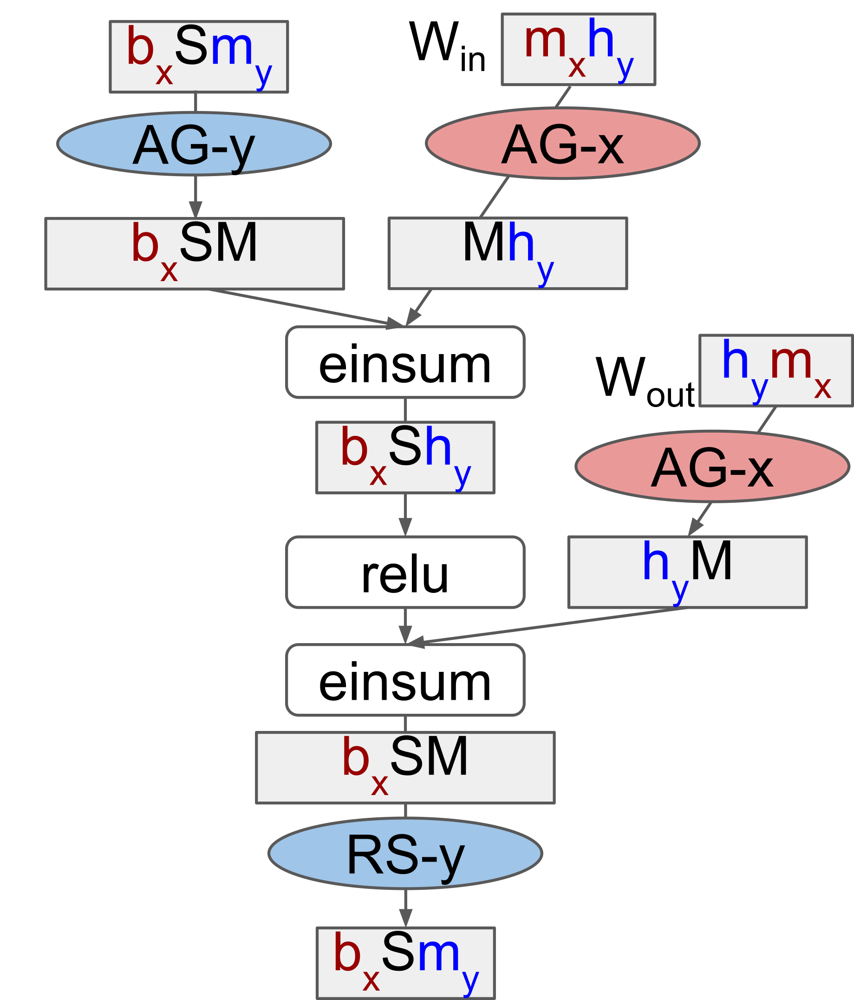
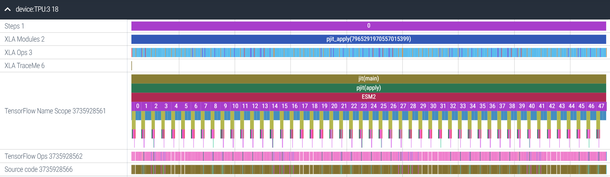
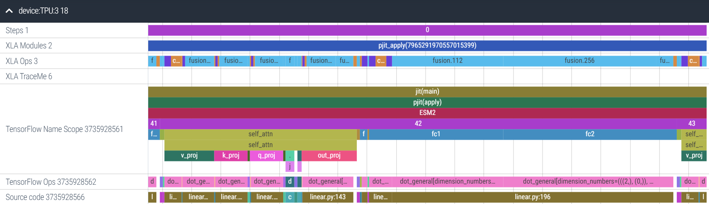
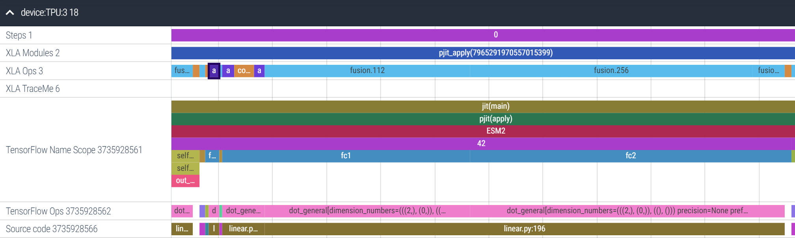

from flax.linen import partitioning as nn_partitioning
def forward(x):
# ...run some code here.
# note x here has shape [batch x seq_len x embed]
x = nn_partitioning.with_sharding_constraint(x, ("batch", None, "embed"))
# ...continue more code here.
return xAs of this writing in late-2022, large language models (LLMs) can now easily exceed 10B+ parameters (and the largest at 100B+ parameters). Pure data parallel strategies are no longer viable as the model itself no longer fits on single devices. Fortunately, research and engineering in scaling them have not slowed down; in the JAX (Bradbury et al., 2018) ecosystem in particular we now have pjit, enabling an orthogonal way to parallelize models called tensor parallelism. In this post, we’ll explore the mathematical underpinnings of tensor parallelism, and learn how to implement it for a 15B param language model using pjit.
Intro: Parallelism
Data Parallelism
Until recently, large scale training of deep learning models have primarily used data parallelism:
- Each device stores a full copy of the model, and receives a “shard” of the batch (if the full batch is 8 training examples, split along 2 devices each device receives 4 examples).
- Each device independently computes the loss, and its gradient (w.r.t. the parameters) using its data shard.
- Only once during each step, they synchronize their gradients and update their own copy of the model.
As long as a full copy of the model1 fits on device, this general strategy can scale gracefully to the typical maximum of 8 GPUs on a single host, and was the likely strategy used to train the “big” (213 million params) Transformer with in the original Attention is All You Need (Vaswani et al., 2017, p. 7) paper 2. Properly optimized, data parallelism scales to even hundreds of GPUs on multiple hosts.
However, data parallelism isn’t enough when the model itself can no longer fit on a single device. This is where model parallelism comes in.
Tensor Parallelism
Model parallelism is when we split the model itself across multiple devices. Tensor Parallelism (“sharding”) is one of two ways to do this; the other is Pipeline Parallelism (“pipelining”). The latter is briefly discussed at the end, but the focus here really is on the former.
Tensor parallelism is the answer to this question: what if we could compute the activations of every layer of our model, distributed across all our devices?
Suppose we have 4 devices: with standard data parallelism we make each device compute all the embedding dimensions for 1/4th of the batch:
But perhaps we could make each device compute 1/4th the embedding dimensions for the entire batch, like this:

Even more: instead of sharding on one axis, we could shard both axes. What if we arranged these 4 devices in a \(2\times2\) mesh, such that the first (top left) device computed 1/2 the embedding dimensions for 1/2 the batch?
This is the big idea behind tensor parallelism: arranging our devices into a 2D mesh, and then sharding both our weights and activations on both axes, for all the layers. That is, each device holds a single “shard” of every layer in the model. When done properly, it is possible to run calculations with only one full copy of the model distributed across all the devices.
We’ll start ground up: at the level of the dot products themselves, and see how sharding allows us to do very large matrix multiplies, by trading off increased communication for reduced memory use. Then, we’ll scale it up to a full model in JAX, implementing sharding with pjit on a 15B language model for inference, with focus on the exact code changes, keeping them minimal.
Partitioning: Intuition
Intro: Dot products
Let’s start with an observation: any dot product between two vectors can be broken down into the sum of multiple smaller dot products. Suppose:
\[ a = \begin{bmatrix} 1 \\ 0 \\ 2 \\ -1 \end{bmatrix}, b = \begin{bmatrix} -1 \\ 2 \\ 0 \\ 2 \end{bmatrix} \]
Then, the dot product of these two vectors of length 4 is \[a \cdot b = (1 \times -1) + (0 \times 2) + (2 \times 0) + (-1 \times 2) = -3\]
But we could easily re-write that expanded calculation as \[\textcolor{BurntOrange}{\underbrace{[(1 \times -1) + (0 \times 2)]}_\text{-1}} + \textcolor{Plum}{\underbrace{[(2 \times 0) + (-1 \times 2)]}_\text{-2}}\]
Each of these two terms individually is also a dot product of two vectors of length 2. Recoloring the original vectors, we can imagine them as composed of two “partitioned”-vectors:
\[ a = \begin{bmatrix} \textcolor{BurntOrange}{1} \\ \textcolor{BurntOrange}{0} \\ \textcolor{Plum}{2} \\ \textcolor{Plum}{-1} \end{bmatrix} \;\; b = \begin{bmatrix} \textcolor{BurntOrange}{-1} \\ \textcolor{BurntOrange}{2} \\ \textcolor{Plum}{0} \\ \textcolor{Plum}{2} \end{bmatrix} \]
Now, say I wanted my friend to help out with this tedious calculation. If I calculated the dot product with the first partition of each vector (getting back \(\textcolor{BurntOrange}{-1}\)), they’d only need to return the result (\(\textcolor{Plum}{-2}\)) of their partition (and not their entire sub-vectors) for me to calculate the full dot product, \((-1)+(-2)=-3\).
Intro: Matrix multiplies
Let’s build on this with another observation: In a matrix multiply \(AB=C\), \(C\) is simply a storage mechanism for the pairwise dot-products of all the (row) vectors of \(A\) and (column) vectors of \(B\)3. Specifically, let:
\[A = \begin{bmatrix} \textcolor{LimeGreen}{1} & \textcolor{LimeGreen}{0} & \textcolor{LimeGreen}{2} & \textcolor{LimeGreen}{-1} \\ 2 & 1 & 0 & -2 \end{bmatrix} \;\; B = \begin{bmatrix} 0 & \textcolor{LimeGreen}{-1} \\ 1 & \textcolor{LimeGreen}{2} \\ 2 & \textcolor{LimeGreen}{0} \\ 0 & \textcolor{LimeGreen}{2} \end{bmatrix}\;\; AB = C = \begin{bmatrix} 4 & \textcolor{LimeGreen}{-3} \\ 1 & -4 \end{bmatrix} \]
\(A\)’s first row vector and \(B\)’s second column vector should seem familiar: we just took their dot products. And as expected, the element of the first row, second column of \(C\) is that dot product \(-3\). This perspective also neatly explains two facts about matrix multiplication:
- Why \(C\) is a \(2 \times 2\) matrix: \(A\) has two row vectors, and \(B\) has two column vectors, resulting in a \(2 \times 2\) matrix to capture all the pairwise dot products. (Likewise, if \(A\) had \(3\) row vectors, \(C\) would be of shape \(3 \times 2\)).
- Why the “inner axes” (\(A\) being \(2 \times \textcolor{LimeGreen}{4}\), \(B\) being \(\textcolor{LimeGreen}{4} \times 2\)) have to match: we can’t take dot products of vectors of different lengths. Take note of this “inner axes” terminology, we’re about to build on this right now!
Both combined, we have the general rule for the shapes: \(\underbrace{A}_{n\times d} \underbrace{B}_{d\times m} = \underbrace{C}_{n\times m}\)
Sharding: GSPMD-style
The GSPMD paper (Xu et al., 2021) introduced an optimal sharding pattern for Transformers, subsequently used to train PaLM (Chowdhery et al., 2022). To reinforce our understanding of the two cases above, we’ll now look at the sharding spec for the feedforward network in the Transformer layer. But before that, one final detour:
GSPMD is the parallelization system that enables
pjit, implemented as an extension to XLA (JAX’s compiler).What is \(XW\)?
Deep learning models at their core are straightforward: a number of layers stacked on top of each other. The core building block is the fully connected layer, often written as \(\sigma(XW + b)\). It’s really three operations:
- \(XW\)8 is a matrix multiply, where \(X\) is a matrix of datapoints as row vectors, and \(W\) is a weight matrix.
- \(b\) is a vector of biases we add to \(XW\).
- \(\sigma\) is a non-linearity of our choice, often
ReLUbut more recently enhanced variants such asGeLUin Transformer models.
We know what it means to shard the data \(X\) along its outer axis over X: it’s just splitting the batch into yet smaller batches, standard data parallelism. But what does it mean to shard \(W\) along its outer axis, over Y? To understand that, let’s dive deeper: what is \(XW\)?
Well, it’s just a storage mechanism for the dot products of \(X\)’s row vectors, and \(W\)’s column vectors. We can directly reuse the math at the start of this post, replacing \(A\) and \(B\) with \(X\) and \(W\):
\[X = \begin{bmatrix} \textcolor{LimeGreen}{1} & \textcolor{LimeGreen}{0} & \textcolor{LimeGreen}{2} & \textcolor{LimeGreen}{-1} \\ 2 & 1 & 0 & -2 \end{bmatrix} \;\; W = \begin{bmatrix} 0 & \textcolor{LimeGreen}{-1} \\ 1 & \textcolor{LimeGreen}{2} \\ 2 & \textcolor{LimeGreen}{0} \\ 0 & \textcolor{LimeGreen}{2} \end{bmatrix}\;\; XW = \begin{bmatrix} 4 & \textcolor{LimeGreen}{-3} \\ 1 & -4 \end{bmatrix} \]
The first row of the output matrix, stores the dot products of the first row vector of \(X\) with all of the column vectors of \(W\). Since the dot product calculates how much two vectors “match” 9, the new output row vector (of the \(XW\)) stores how much the original row vector (of \(X\)) matches with each of the \(W\) weight vectors. Since we have two weight vectors, the output row vectors have two feature dimensions; if we have 20,000 weight vectors, they’d have 20,000 feature dimensions!
This output, once passed through a nonlinearity are the new data vectors (the “activations”), which will then be multiplied with the next layer’s weight matrix to produce yet newer activations. This really is what we mean by stacking layers on top of each other: using the feature matching scores of one layer as the data to the next layer.
Answering the question, to shard \(W\)’s outer axis along Y is to ask each device with a given Y value to compute the dot products with a subset of \(W\)’s column vectors. We can do this since the dot product of a data vector with a weight vector doesn’t depend on any other weight vectors. This means on a \(2\times4\) mesh with Y=0,1,2,3, devices with Y=0 can calculate dot products with the first 1/4th of the weight vectors, devices with Y=1 the second 1/4th, and so on. This is exactly what we see in the calculation of \(C\) in the previous section (again, replace \(A\) and \(B\) with \(X\) and \(W\))
GSPMD’s sharding spec
To recap, in the original Transformer (and most variants since), “Each layer has two sub-layers. The first is a multi-head self-attention mechanism, and the second is a simple, position-wise fully connected feed-forward network.” (A. Huang et al., 2022) Let’s look at the GSPMD paper’s proposed sharding spec for the second sub-layer, the feedforward network (FFN):10

The FFN is made of two fully-connected layers (the \(\sigma(XW + b)\) we just discussed). Breaking this down:
- The first multiplies a weight (\(W_{\text{in}}\), sharded as \(\textcolor{Maroon}{m_x}\textcolor{Blue}{h_y}\)) to transform the input features (the original embeddings, sharded as \(\textcolor{Maroon}{b_x}S\textcolor{Blue}{m_y}\)) into the features of the “hidden layer” (sharded as \(\textcolor{Maroon}{b_x}S\textcolor{Blue}{h_y}\)). In most implementations, the hidden layer has 4x the number of features of the input/outputs of the FFN.
- The second multiplies a weight (\(W_{\text{out}}\), sharded as \(\textcolor{Blue}{h_y}\textcolor{Maroon}{m_x}\)) to transform the features of the “hidden layer” (sharded as \(\textcolor{Maroon}{b_x}S\textcolor{Blue}{h_y}\)) into the output features (the new embeddings, sharded as \(\textcolor{Maroon}{b_x}S\textcolor{Blue}{m_y}\)). The number of output features are the same as the input features, but the features themselves are different!
Let’s zoom in on this, looking at each of these multiplies (the einsums in the diagram) separately:
Wrapping it up
We did it! As we see, Case 2, combined with Case 1A or 1B as appropriate allowed us to stack two fully sharded, fully connected layers on top of each other, and produce an output with the exact same sharding as the input (no resharding needed!).
We won’t cover the sharding of the self-attention sublayer here, but you should be able to combine the two cases here, with Table 1 in the GSPMD paper to work out how the attention heads are sharded over the Y axis11.
Partitioning: In JAX
Now that we have a deep understanding of how to shard a neural network, let’s write some code! We’re in luck here: I’m currently working on a port of the ESM2 (Lin et al., 2022) protein language model into Flax (Heek et al., 2020), so much of the examples will be directly pulled from the working codebase.
For context: the model built here is a BERT (Devlin et al., 2019) style, encoder-only Transformer. It is a 15B param model with 48 layers, and 5120 dimensional embeddings as seen in the previous section. Each encoder layer has two sublayers as previously described: a self-attention sublayer followed by a feedforward network sublayer. Let’s start by understanding pjit’s programming model, then using it to progressively build the full model.
The pjit programming model
A good way to think of pjit is a supercharged jax.pmap. If you recall, pmap runs the same program on multiple devices, each with a different shard of input data over the batch axis. pjit is more flexible: it allows us to shard both the data and weights (and when training, even the optimizer states) in whatever configuration we please over a mesh. To do so, pjit requires three things from us:
- A mesh specification, mapping the “logical” devices on the 2D (or higher-D) mesh to the physical devices available.
- The sharding spec of all tensors being passed as input to, and returned as output to from the function.
- Sharding constraints for select intermediate tensors inside the function. This isn’t strictly necessary (XLA GSPMD will try to find a viable layout), but can lead to improved memory usage.
Note what isn’t here: JAX doesn’t need us to insert any of the collective ops we discussed. It uses a constraint based model, where we specify sharding constraints for the “big”, memory intensive tensors, and it automatically determines the sharding pattern for all other intermediate tensors in the function, as well as any collective ops that need to be inserted to meet these constraints.
Applying constraints to a FFN
In a previous section, we looked at the sharding spec the GSPMD paper proposed for the FFN in a transformer layer. To summarize in a table:
| Tensor | Sharding Spec [shape] |
|---|---|
| \(\text{activation: embedding}\) | \(X, \_, Y\) [batch, seq_len, embed] |
| \(W_{\text{in}}\) | \(X, Y\) [embed, hidden] |
| \(\text{activation: hidden}\) | \(X, \_, Y\)[batch, seq_len, hidden] |
| \(W_{\text{out}}\) | \(Y, X\) [hidden, embed] |
This sharding spec is for any generic, dense Transformer. The code below is the second sublayer (the FFN network) of an encoder layer in the ESM2 model. We apply this sharding spec to the weights on lines 11 and 21, and to the activations on lines 13 and 23:
# ... we apply a layer norm and multi-head attention before this.
# Create second residual block (LayerNorm + MLP)
residual = x
x = nn.LayerNorm(name="final_layer_norm", epsilon=1e-5)(x)
# Create + apply first MLP layer with weight + activation sharding constraints.
x = partitioning.Dense(
self.ffn_embed_dim,
name="fc1",
shard_axes={"kernel": ("embed_kernel", "hidden")},
)(x)
x = nn_partitioning.with_sharding_constraint(x, ("batch", None, "hidden"))
# Don't approximate gelu to avoid divergence with original PyTorch.
x = nn.gelu(x, approximate=False)
# Create + apply second MLP layer with weight + activation sharding constraints.
x = partitioning.Dense(
self.embed_dim,
name="fc2",
shard_axes={"kernel": ("hidden", "embed_kernel")},
)(x)
x = nn_partitioning.with_sharding_constraint(x, ("batch", None, "embed"))
x = residual + x
return xThe activation sharding specs are applied as in the initial example: we just with_sharding_constraint. But there’s two new things:
- There’s a new
shard_axesargument being passed into the layer definition on lines 11 and 21. - We’re using the
partitioning.Denselayer instead of the standardnn.Dense.
Let me elaborate on what’s going on here.
Putting it all together
We omitted a key detail in the opening example: in the real forward pass (the .apply method) we need to pass in both esm_sharded_params, and the data batch. Since the params are an input argument, they will also need a sharding spec. The params in Flax are a PyTree (specifically, a nested dict) and so the sharding spec is a nested dict with the same structure. There’s some plumbing here, so let’s go through it step by step:
Because the ShardMixIn .sow’s the sharding metadata into the module, this metadata is available at model initialization with the .init method. Let’s initialize the 15B model, and inspect the shapes of the parameters of layer 42:
Code
import functools
import flax.linen as nn
import jax
import jax.numpy as jnp
from esmjax.modules import modules
from esmjax.modules import partitioning
embed_dim = 5120
num_heads = 40
num_layers = 48
embedding = nn.Embed(33, embed_dim)
block_fn = functools.partial(modules.EncoderLayer, num_heads, embed_dim, embed_dim * 4)
esm2 = modules.ESM2(embedding, block_fn, num_layers)
key = jax.random.PRNGKey(0)
arr = jnp.array([[0, 1, 2]])We can see that the 5120-dimensional embeddings are projected to produce embeddings for 40 heads, with 128 dims each.
# jax.eval_shape replaces all actual arrays with ShapeDtypeStruct
# This avoids memory use, *and* allows us to inspect the param shapes.
params = jax.eval_shape(esm2.init, key, arr)
params['params']['42']['self_attn']FrozenDict({
k_proj: {
bias: ShapeDtypeStruct(shape=(40, 128), dtype=float32),
kernel: ShapeDtypeStruct(shape=(5120, 40, 128), dtype=float32),
},
out_proj: {
bias: ShapeDtypeStruct(shape=(5120,), dtype=float32),
kernel: ShapeDtypeStruct(shape=(40, 128, 5120), dtype=float32),
},
q_proj: {
bias: ShapeDtypeStruct(shape=(40, 128), dtype=float32),
kernel: ShapeDtypeStruct(shape=(5120, 40, 128), dtype=float32),
},
v_proj: {
bias: ShapeDtypeStruct(shape=(40, 128), dtype=float32),
kernel: ShapeDtypeStruct(shape=(5120, 40, 128), dtype=float32),
},
})We can also see the axis metadata generated when calling the .init method:
params['params_axes']['42']['self_attn']FrozenDict({
k_proj: {
kernel_axes: AxisMetadata(names=('embed_kernel', 'heads', None)),
},
out_proj: {
kernel_axes: AxisMetadata(names=('heads', None, 'embed_kernel')),
},
q_proj: {
kernel_axes: AxisMetadata(names=('embed_kernel', 'heads', None)),
},
v_proj: {
kernel_axes: AxisMetadata(names=('embed_kernel', 'heads', None)),
},
})Only the params that we’ve specified a sharding constraint over exist in this PyTree. To pass into pjit, we use a utility function to convert the names into mesh axes, and replicate the structure of the full params. The AxisMetadata are replaced with proper PartitionSpecs, and all other params have their sharding pattern set to None, meaning full replication.12
params, params_axes = params.pop("params_axes")
esm_axes = partitioning.get_params_axes(params,
params_axes,
rules=partitioning.DEFAULT_TPU_RULES)
esm_axes['params']['42']['self_attn']FrozenDict({
k_proj: {
bias: None,
kernel: PartitionSpec('X', 'Y', None),
},
out_proj: {
bias: None,
kernel: PartitionSpec('Y', None, 'X'),
},
q_proj: {
bias: None,
kernel: PartitionSpec('X', 'Y', None),
},
v_proj: {
bias: None,
kernel: PartitionSpec('X', 'Y', None),
},
})We now pass this sharding spec (esm_axes) into the pjit definition. Then, we have a fully sharded inference method, distributing the computation work of this 15B model across all 8 cores of a TPU. You can find a fully runnable notebook here.
apply_fn = pjit.pjit(
esm.apply,
in_axis_resources=(esm_axes, P("X", None)),
out_axis_resources=P("X", None, "Y"),
)
with maps.Mesh(mesh.devices, mesh.axis_names), nn_partitioning.axis_rules(
partitioning.DEFAULT_TPU_RULES
):
embeds = apply_fn(esm_sharded_params, batch)Program Trace
Upto now, we’ve handwaved the fact that there’s a lot of communication going on in this forward pass. How much time on the forward pass are we spending on these collective communication ops? The short answer: on a TPUv2-8, about 20%13. The way to answer this is a program trace, and JAX makes this easy: here’s the full trace of all 48 layers of the ESM2 15B model on TPU3 (of 0 to 7) of a TPUv2-8, taking about 4.25s to complete inference with a batch size of 32:

Let’s zoom in on layer 42. We can tell from this trace that the FFN sublayer (fc1 and fc2) takes more time to execute than the self-attention sublayer. On the top bar we have the XLA Ops, the direct, device-level ops being executed. Most of these are fusion ops, a combination of fused multiplies and elementwise ops (e.g. addition, subtraction):

Let’s zoom in more into the FFN sublayer. Amusingly, XLA has decided to allgather fc2’s weight matrix (the selected purple box) before the matmuls of fc1 and fc2. This is the power of JIT-compilation: XLA is able to re-order operations as needed for better performance. It’s also inserted a reduce-scatter over the results (the rightmost, blue fusion op). Overall, the FFN sublayer takes 54ms, and 8ms are spent on collective communication and data reformatting ops, about ~15%14:

In summary, for a ~20% performance tradeoff, we can now run inference with only one copy of the model stored across all our devices! I want you to explore this trace yourself, so here’s the link to Perfetto; just hit Open trace file and upload this trace, and go play around!
Conclusion: Beyond Tensor Parallelism
Tensor parallelism is powerful, allowing us to scale from 1 GPU/TPU to all 8 connected GPU/TPUs, and when using larger slices of a TPU pod, even further (PaLM was trained using just tensor parallelism, on two full TPUv4 pods with 3072 chips each, Sec. 4). There’s three concluding thoughts I’d like to leave you with:
Pipeline parallelism: Given the large volume of communication involved, tensor parallelism is only viable when there is fast (ideally 1TB/s+) interconnect between devices. This is true for TPUs all the way up to an entire pod; however, GPUs only have fast interconnect (e.g. NVLink) in groups of 8 on a single host. Between hosts, the interconnect is slower (e.g. commercial cloud is typically on the order of ~100GB/s 15), meaning a different strategy is necessary.
If tensor parallelism is slicing a model “horizontally” (each layer is sharded across all devices), pipeline parallelism is slicing it “vertically” (device 1 can hold layer 0,1 device 2 holds layers 2,3, and so on). The only communication is when activations move between layers, not inside a layer. The problem is that it leads to “bubbles” where devices are inactive (Y. Huang et al., 2019). Large GPU clusters tend to use tensor parallelism for all 8 GPUs connected on a single host, and pipeline parallelism between hosts to make the best of both strategies.
More automation:
pjitis incredibly flexible, capable of accommodating any sharding pattern we can come up with. The GSPMD paper covers even more “strange” cases such as sharding convolutions over spatial axes, across multiple devices. However, we still do need to specify a sharding pattern, which for non-experts can be challenging. There’s a lot of exciting work going on in frameworks such as Alpa (Zheng et al., 2022), which automate this entirely, and I’m excited to see where this line of research is headed.Larger models? Scaling language models has been a strategy that continues to work with no clear signs of slowing down. But a substantial fraction of scaling up goes into learning factual knowledge about the world than the semantics of language. Retrieval-augmented models such as RETRO (Borgeaud et al., 2022) and Atlas (Izacard et al., 2022) are much smaller (the largest RETRO model is only 7.5B params). However, they introduce a new axis (retrieval time) to the current trio of compute, memory use and intra/inter-host communication, and I’m curious to learn where the bottlenecks will arise as this strategy is scaled up.
And factual knowledge can go stale: remember, a BERT model trained in 2019 would associate the word Corona more with beer than the pandemic!
Further Reading
If you’d like to keep learning more about parallelism at scale, here’s a couple places to help you get started:
- How to Train Really Large Models on Many GPUs? (Weng, 2021): This is a great blog post providing a “big picture” overview of the multiple types of parallelism possible on GPU clusters, as well as other memory saving strategies.
- Scalable Training of Language Models using JAX pjit and TPUv4 (Yoo et al., 2022): A technical report from Cohere detailing how they use
pjit, data and tensor parallelism to scale their training on TPUv4 pods (without needing pipeline parallelism) - Megatron-LM: Training Multi-Billion Parameter Language Models Using Model Parallelism (Shoeybi et al., 2019): This paper explored sharding the data and weights strictly on the outer axes (Case 2 only), motivated by a need to minimize inter-device communication on large GPU clusters.
- Efficient Large-Scale Language Model Training on GPU Clusters Using Megatron-LM (Narayanan et al., 2021): This is a follow-up paper, exploring large scale parallelism on GPU clusters with a fusion of tensor parallelism (Case 2 only) combined with pipeline parallelism.
- ZeRO: Memory Optimizations Toward Training Trillion Parameter Models (Rajbhandari et al., 2020): This paper looked at the technical optimizations needed to store only one copy of a model across all devices (Zero-DP, Stage 3), finding this increases communication volume by only 1.5x over baseline data parallelism.
- GSPMD: General and Scalable Parallelization for ML Computation Graphs (Xu et al., 2021): We used the sharding spec introduced in this paper; the paper as whole discusses extensively about propagating user annotations across a computation graph, and the technical considerations involved.
Acknowledgements
Really grateful to Robert Dumitru for reading an early draft of this, providing honest feedback on the bits that “didn’t quite make sense”, and how they could be clearer. Access to TPUs was generously provided through the TPU Research Cloud.
Thanks for taking the time to read through this, and I hope you learned something new! Best place to leave feedback would be either my Twitter, or this form here. See you around!
References
Borgeaud, S., Mensch, A., Hoffmann, J., Cai, T., Rutherford, E., Millican, K., Van Den Driessche, G. B., Lespiau, J.-B., Damoc, B., Clark, A., De Las Casas, D., Guy, A., Menick, J., Ring, R., Hennigan, T., Huang, S., Maggiore, L., Jones, C., Cassirer, A., … Sifre, L. (2022). Improving language models by retrieving from trillions of tokens. In K. Chaudhuri, S. Jegelka, L. Song, C. Szepesvari, G. Niu, & S. Sabato (Eds.), Proceedings of the 39th international conference on machine learning (Vol. 162, pp. 2206–2240). PMLR. https://proceedings.mlr.press/v162/borgeaud22a.html
Bradbury, J., Frostig, R., Hawkins, P., Johnson, M. J., Leary, C., Maclaurin, D., Necula, G., Paszke, A., VanderPlas, J., Wanderman-Milne, S., & Zhang, Q. (2018). JAX: Composable transformations of Python+NumPy programs (Version 0.3.13). http://github.com/google/jax
Chowdhery, A., Narang, S., Devlin, J., Bosma, M., Mishra, G., Roberts, A., Barham, P., Chung, H. W., Sutton, C., Gehrmann, S., Schuh, P., Shi, K., Tsvyashchenko, S., Maynez, J., Rao, A., Barnes, P., Tay, Y., Shazeer, N., Prabhakaran, V., … Fiedel, N. (2022). PaLM: Scaling language modeling with pathways. arXiv. https://doi.org/10.48550/ARXIV.2204.02311
Devlin, J., Chang, M.-W., Lee, K., & Toutanova, K. (2019). BERT: Pre-training of deep bidirectional transformers for language understanding. Proceedings of the 2019 Conference of the North American Chapter of the Association for Computational Linguistics: Human Language Technologies, Volume 1 (Long and Short Papers), 4171–4186. https://doi.org/10.18653/v1/N19-1423
Heek, J., Levskaya, A., Oliver, A., Ritter, M., Rondepierre, B., Steiner, A., & Zee, M. van. (2020). Flax: A neural network library and ecosystem for JAX (Version 0.6.0). http://github.com/google/flax
Huang, A., Subramanian, S., Sum, J., Almubarak, K., & Biderman, S. (2022). The annotated transformer. http://nlp.seas.harvard.edu/annotated-transformer/#encoder-and-decoder-stacks
Huang, Y., Cheng, Y., Bapna, A., Firat, O., Chen, D., Chen, M., Lee, H., Ngiam, J., Le, Q. V., Wu, Y., & Chen, zhifeng. (2019). GPipe: Efficient training of giant neural networks using pipeline parallelism. In H. Wallach, H. Larochelle, A. Beygelzimer, F. dAlché-Buc, E. Fox, & R. Garnett (Eds.), Advances in neural information processing systems (Vol. 32). Curran Associates, Inc. https://proceedings.neurips.cc/paper/2019/file/093f65e080a295f8076b1c5722a46aa2-Paper.pdf
Izacard, G., Lewis, P., Lomeli, M., Hosseini, L., Petroni, F., Schick, T., Dwivedi-Yu, J., Joulin, A., Riedel, S., & Grave, E. (2022). Few-shot learning with retrieval augmented language models. arXiv. https://doi.org/10.48550/ARXIV.2208.03299
Lin, Z., Akin, H., Rao, R., Hie, B., Zhu, Z., Lu, W., Santos Costa, A. dos, Fazel-Zarandi, M., Sercu, T., Candido, S., & Rives, A. (2022). Language models of protein sequences at the scale of evolution enable accurate structure prediction. bioRxiv. https://doi.org/10.1101/2022.07.20.500902
Narayanan, D., Shoeybi, M., Casper, J., LeGresley, P., Patwary, M., Korthikanti, V. A., Vainbrand, D., Kashinkunti, P., Bernauer, J., Catanzaro, B., Phanishayee, A., & Zaharia, M. (2021). Efficient large-scale language model training on GPU clusters using megatron-LM. arXiv. https://doi.org/10.48550/ARXIV.2104.04473
Rajbhandari, S., Rasley, J., Ruwase, O., & He, Y. (2020). ZeRO: Memory optimizations toward training trillion parameter models. Proceedings of the International Conference for High Performance Computing, Networking, Storage and Analysis.
Roberts, A., Chung, H. W., Levskaya, A., Mishra, G., Bradbury, J., Andor, D., Narang, S., Lester, B., Gaffney, C., Mohiuddin, A., Hawthorne, C., Lewkowycz, A., Salcianu, A., Zee, M. van, Austin, J., Goodman, S., Soares, L. B., Hu, H., Tsvyashchenko, S., … Gesmundo, A. (2022). Scaling up models and data with \(\texttt{t5x}\) and \(\texttt{seqio}\). arXiv Preprint arXiv:2203.17189. https://arxiv.org/abs/2203.17189
Shoeybi, M., Patwary, M., Puri, R., LeGresley, P., Casper, J., & Catanzaro, B. (2019). Megatron-LM: Training multi-billion parameter language models using model parallelism. arXiv. https://doi.org/10.48550/ARXIV.1909.08053
Vaswani, A., Shazeer, N., Parmar, N., Uszkoreit, J., Jones, L., Gomez, A. N., Kaiser, Ł., & Polosukhin, I. (2017). Attention is all you need. In I. Guyon, U. V. Luxburg, S. Bengio, H. Wallach, R. Fergus, S. Vishwanathan, & R. Garnett (Eds.), Advances in neural information processing systems (Vol. 30). Curran Associates, Inc. https://proceedings.neurips.cc/paper/2017/file/3f5ee243547dee91fbd053c1c4a845aa-Paper.pdf
Weng, L. (2021). How to train really large models on many GPUs? Lilianweng.github.io. https://lilianweng.github.io/posts/2021-09-25-train-large/
Xu, Y., Lee, H., Chen, D., Hechtman, B. A., Huang, Y., Joshi, R., Krikun, M., Lepikhin, D., Ly, A., Maggioni, M., Pang, R., Shazeer, N., Wang, S., Wang, T., Wu, Y., & Chen, Z. (2021). GSPMD: General and scalable parallelization for ML computation graphs. CoRR, abs/2105.04663. https://arxiv.org/abs/2105.04663
Yoo, J., Perlin, K., Kamalakara, S. R., & Araújo, J. G. M. (2022). Scalable training of language models using JAX pjit and TPUv4. arXiv. https://doi.org/10.48550/ARXIV.2204.06514
Zheng, L., Li, Z., Zhang, H., Zhuang, Y., Chen, Z., Huang, Y., Wang, Y., Xu, Y., Zhuo, D., Xing, E. P., Gonzalez, J. E., & Stoica, I. (2022). Alpa: Automating inter- and Intra-Operator parallelism for distributed deep learning. 16th USENIX Symposium on Operating Systems Design and Implementation (OSDI 22), 559–578. https://www.usenix.org/conference/osdi22/presentation/zheng-lianmin
Footnotes
and a copy of the optimizer state and gradients when we’re training, so potential total memory use of upto 3x the size of the model itself.↩︎
Specifically, in section 5.2 the authors note “We trained our models on one machine with 8 NVIDIA P100 GPUs.”↩︎
Why the row vectors of \(A\) and the column vectors of \(B\)? Why not just the column vectors of both? This is mostly due to convention, as confusing as it can be for newcomers. I like the Mnemonic RAC-B (“rack b”), rows of A, columns of B.↩︎
For an \(N \times N\) matrix, matrix multiplication has time complexity \(O(N^3)\) while matrix addition is \(O(N^2)\). For a large enough matrix, the speedup from the parallel matrix multiplies can outweigh the cost of communicating then adding afterwards.↩︎
You may also recognize this as just
jax.lax.psum, which it is!↩︎Of course, not accounting for the communication overhead of the AllReduce. For systems that are compute-bound, splitting the actual multiplication across multiple devices and syncing them together (due to the \(O(N^3)\) compute costs of a matrix multiply vs the \(O(N^2)\) memory transfer) is still often worth it.↩︎
Again, the outer axes in a matrix multiply are individual vectors; the inner axes are the feature dimensions of those vectors, as we saw in the intro. Feel free to scroll back if you need to recap!↩︎
Note that in math contexts this is often written as \(Wx\), where \(x\) is a column vector. In Python, data points are stored as row vectors, which means \(X\) has to be on the left hand side (because the feature dimension needs to be the inner dimension, the one we take dot products over!).↩︎
Roughly speaking. The dot product is sensitive to the magnitude of the vectors too, not just their direction. If a particular weight vector is very large, it will have large dot products even if the data vector isn’t that similar. However, with proper regularization, most weight vectors should be within a “reasonable” range, enabling comparison.↩︎
This is specifically the “2D finalized” sharding pattern presented in Table 1.↩︎
Or in the math textbook way, “this is left as an exercise to the reader”. But really, I think working it out would be a neat exercise!↩︎
On a larger model, we’d shard even the biases and layer norms, but on this scale it’s fine not to. They’re a lot smaller than the weights.↩︎
A quick estimate counting both the communication ops (e.g. allgather, fused reduce-scatters) as well as data formatting ops.↩︎
It’s worse in the self-attention sublayer (29%), which also takes less time overall, resulting in an average of 20%. Would be a better layer to focus more for improvement!↩︎
Although, newer offerings such as the p4d.24xlarge or BM.GPU4.8 have considerably better inter-node bandwidth. At the same time, the A100 GPUs themselves are much faster, which means the inter-node bandwidth must keep up just to avoid becoming a bottleneck.↩︎